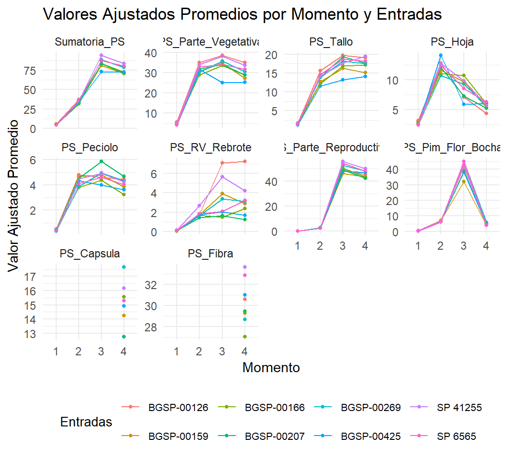

Capítulo 1 Caracterización de entradas de algodón (Gossypium hirsutum L.) del banco de germoplasma de INTA mediante caracteres morfo-fisiológicos
1.1 Introducción
El algodón (Gossypium hirsutum L.) constituye una de las principales fuentes de fibra natural a nivel mundial y desempeña un papel estratégico en la industria textil global. En América Latina, Argentina se posiciona como el segundo productor de fibra de algodón después de Brasil, concentrando su producción principalmente en las provincias de Santa Fe, Chaco y Santiago del Estero. Además de abastecer la demanda interna, la producción nacional contribuye al mercado exportador, con destinos como Pakistán, Vietnam, Turquía, China, Indonesia y Bangladesh (Paytas et al., 2023; ICAC, 2025).
Durante la campaña 2024/25, Argentina alcanzó aproximadamente 683.000 hectáreas implantadas con algodón, destacándose la provincia de Santa Fe con un incremento del 26% respecto de la campaña anterior y representando el 34% del área nacional sembrada (ICAC, 2025; Zorzon, 2025). Estos datos evidencian la creciente importancia del cultivo en el sistema productivo regional.
Con la creación del Instituto Nacional de Tecnología Agropecuaria (INTA) y la implementación de su programa de mejoramiento genético de algodón en 1956, los esfuerzos se orientaron al incremento del rendimiento potencial, la mejora de la calidad de fibra y la incorporación de resistencia genética frente a enfermedades de relevancia económica, tales como la mancha angular bacteriana (Xanthomonas citri subsp. malvacearum), el “azul” del algodón (Cotton leafroll dwarf virus) y la marchitez por Fusarium oxysporum f. sp. vasinfectum (Royo et al., 2007; Scarpin et al., 2022; Scarpin et al., 2023). Como resultado, se ha logrado un progreso genético significativo en caracteres como rendimiento de fibra, porcentaje de fibra y número de capullos por planta, sin comprometer la calidad tecnológica (Scarpin et al., 2022; Scarpin et al., 2023). No obstante, el progreso sostenido continúa siendo necesario para responder a condiciones ambientales contrastantes y a las demandas de sistemas productivos cada vez más mecanizados.
En el norte de Santa Fe, donde predomina el sistema de cosecha tipo stripper, existe una demanda creciente de cultivares con arquitectura compacta y menor desarrollo vegetativo, que optimicen la eficiencia de cosecha y minimicen la contaminación de la fibra. El desarrollo de la cosechadora stripper “Javiyú”, generada por INTA Reconquista, representó un avance tecnológico significativo en la mecanización del cultivo (Pilatti et al., 2021). Paralelamente, la adopción de sistemas de siembra en hileras estrechas y altas densidades de población ha modificado la estructura del cultivo. Entre los productores, la configuración más difundida corresponde a espaciamientos de 52 cm entre hileras y densidades cercanas a 200.000 plantas ha⁻¹ (Paytas et al., 2011). Estos cambios tecnológicos subrayan la necesidad de desarrollar y seleccionar cultivares específicamente adaptados a dichos sistemas.
Un paso fundamental en los programas de mejoramiento orientados a satisfacer estas demandas consiste en la caracterización del germoplasma disponible para identificar progenitores con caracteres complementarios. La colección de algodón del INTA, gestionada por la Red Nacional de Recursos Genéticos (REDGEN), conserva actualmente más de 700 accesiones, principalmente de G. hirsutum, junto con representaciones de G. barbadense y G. barbadense var. brasiliensis (Arriel et al., 2023). Esta diversidad genética constituye un recurso estratégico para el desarrollo de cultivares adaptados a condiciones agroecológicas locales y a sistemas de producción mecanizados. Su relevancia se ve reforzada por iniciativas regionales como el proyecto +Cotton, coordinado por la Organización de las Naciones Unidas para la Alimentación y la Agricultura (FAO) y la Agencia Brasileña de Cooperación (ABC), que resaltan la importancia de conservar y caracterizar germoplasma latinoamericano para fortalecer programas de mejoramiento enfocados en resiliencia climática y calidad de fibra (FAO y ABC, 2025).
El rendimiento en algodón es un carácter complejo determinado por la interacción de múltiples componentes, entre ellos número de capullos por planta, peso de capullo, porcentaje de fibra e índice de semilla, los cuales están fuertemente influenciados por la arquitectura del dosel, las relaciones fuente–destino y las condiciones ambientales durante el ciclo del cultivo (Pettigrew, 2004; Constable y Bange, 2015). Los caracteres fisiológicos, como la eficiencia fotosintética, la acumulación de biomasa y la partición de asimilados hacia órganos reproductivos, desempeñan un rol clave en la determinación del rendimiento y la calidad de fibra (Constable y Bange, 2015).
Parámetros tales como tasa fotosintética, conductancia estomática, contenido de clorofila estimado mediante lecturas SPAD y distribución de biomasa vegetativa y reproductiva aportan información valiosa para interpretar diferencias genotípicas en dinámica de crecimiento y determinación del rendimiento. En consecuencia, la integración de la caracterización morfo-fisiológica con la evaluación agronómica y tecnológica permite una comprensión más integral del desempeño genotípico, particularmente relevante en sistemas productivos del norte argentino donde la estabilidad del rendimiento y la eficiencia de cosecha dependen de una arquitectura optimizada y un adecuado balance reproductivo.
A pesar de los avances logrados en el mejoramiento genético nacional, persiste una disponibilidad limitada de cultivares específicamente adaptados a la cosecha tipo stripper y a configuraciones de hileras estrechas. Asimismo, aunque diversos estudios han caracterizado germoplasma de algodón en función de caracteres agronómicos y de calidad de fibra (Royo, 1998; Royo et al., 2003; Klein et al., 2011), son escasos aquellos que integran atributos morfológicos y fisiológicos directamente vinculados con la adaptación a sistemas mecanizados (Díaz et al., 2011). Esta limitación restringe la identificación eficiente de líneas parentales que combinen alto rendimiento, calidad tecnológica y arquitectura adecuada para producción mecanizada.
En este contexto, los enfoques estadísticos multivariados, como el análisis de componentes principales (ACP) y el agrupamiento jerárquico utilizando la distancia de Gower, han sido ampliamente empleados para explorar conjuntos de datos fenotípicos complejos (Spoljaric et al., 2018; Sarwar et al., 2021; Klein et al., 2022; Ullah et al., 2022; Mangi et al., 2024; Anwar et al., 2025). Estas metodologías permiten la evaluación conjunta de caracteres cuantitativos y cualitativos, facilitando la identificación de patrones de variación y la delimitación de grupos genotípicos con características similares.
1.1.1 Hipótesis
Se plantea como hipótesis que dentro del banco de germoplasma de INTA existe variabilidad morfo-fisiológica significativa entre accesiones de G. hirsutum, y que dicha variabilidad permite identificar genotipos con combinaciones favorables de arquitectura compacta, eficiencia fisiológica y rendimiento de fibra, potencialmente adaptados a sistemas de producción mecanizados tipo stripper y a configuraciones de siembra en hileras estrechas del norte argentino.
1.1.2 Objetivos
En función de lo expuesto, el presente capítulo tuvo como objetivo general realizar una evaluación integral de accesiones de algodón del banco de germoplasma de INTA.
Los objetivos específicos fueron:
-Caracterizar caracteres morfológicos, fenológicos, productivos y de calidad de fibra en un conjunto amplio de accesiones. -Analizar parámetros fisiológicos y patrones de partición de biomasa en genotipos contrastantes seleccionados. -Identificar líneas parentales promisorias para la generación de poblaciones de mejoramiento orientadas a mejorar la adaptación a ambientes contrastantes y a sistemas de producción mecanizados del norte argentino.
1.1.3 Objetivos
Caracterizar entradas de algodón del banco de germoplasma de INTA con diferente procedencia mediante caracteres morfológicos relacionados al rendimiento.
Evaluar procesos fisiológicos que intervienen en la determinación del rendimiento de fibra de entradas de algodón del banco de germoplasma de INTA.
1.2 Materiales y métodos
1.2.1 Sitio experimental y material vegetal
El estudio se llevó a cabo en la Estación Experimental Agropecuaria Reconquista del Instituto Nacional de Tecnología Agropecuaria (INTA), ubicada en la provincia de Santa Fe, Argentina (29°15’ S; 59°44’ O; 50 m s.n.m.). Los ensayos se desarrollaron durante las campañas 2018–2020 bajo condiciones de invernadero.
Se evaluaron 26 entradas de algodón pertenecientes al banco de germoplasma de INTA, conservado en la Estación Experimental Sáenz Peña (Chaco, Argentina). La selección de estos materiales se realizó considerando su diversidad de origen geográfico y su desempeño contrastante en rendimiento y calidad de fibra, según la información disponible en el banco de germoplasma. El conjunto incluyó materiales provenientes de Argentina, Australia, Camerún, Chad, China, Costa de Marfil, Pakistán, Senegal y Estados Unidos (Tabla 1).
Las plantas se cultivaron en macetas de 5 L conteniendo 2200 g de suelo sin disturbio (pH 6,7; P disponible: 165,7 mg kg⁻¹; Na⁺: 0,6 cmol⁺ kg⁻¹; K⁺: 0,8 cmol⁺ kg⁻¹; Ca²⁺: 27,0 cmol⁺ kg⁻¹; Mg²⁺: 2,2 cmol⁺ kg⁻¹; NH₄⁺: 76,3 mg kg⁻¹; NO₃⁻: 86,1 mg kg⁻¹) mezclado con 400 g de sustrato comercial (GrowMix® Multipro). El riego se realizó de manera regular con el fin de mantener la humedad próxima a capacidad de campo.
Los experimentos se dispusieron bajo un diseño en bloques completos aleatorizados (DBCA), considerando cada maceta con una planta como unidad experimental. Este diseño permitió minimizar posibles gradientes espaciales dentro del invernadero, particularmente aquellos asociados a luz y temperatura. Se establecieron tres repeticiones independientes por entrada.
Entradas | Procedencia | Entradas | Procedencia |
|---|---|---|---|
BGSP-00166* | Argentina | BGSP-00748 | China |
BGSP-00177 | Argentina | BGSP-00752 | China |
BGSP-00192 | Argentina | BGSP-00755 | China |
BGSP-00193 | Argentina | BGSP-00759 | China |
BGSP-00194 | Argentina | BGSP-00779 | China |
BGSP-00207* | Argentina | BGSP-00067 | Costa de Marfil |
BGSP-00269* | Argentina | BGSP-00028 | EEUU |
SP 41255* | Argentina-Línea avanzada | BGSP-00145 | EEUU |
SP 6565* | Argentina-Línea avanzada | BGSP-00159* | EEUU |
BGSP-00514 | Australia | BGSP-00425* | EEUU |
BGSP-00072 | Camerún | BGSP-00428 | EEUU |
BGSP-00088 | Camerún | BGSP-00715 | Pakistán |
BGSP-00070 | Chad | BGSP-00126* | Senegal |
* Entradas que fueron seleccionadas para un mayor análisis | |||
1.2.2 Diversidad fenotípica del germoplasma de algodón: caracteres morfológicos, de rendimiento y calidad de fibra
Se realizó una caracterización inicial de las 26 entradas, evaluándose caracteres morfológicos, fenológicos, de rendimiento y de calidad de fibra (Tabla 2).
En el estado reproductivo de cut-out —definido cuando el número de nudos por encima de la última flor blanca en el tallo principal fue menor a cuatro (Bourland et al., 1992)— se registraron caracteres morfológicos cualitativos tales como forma de planta, tipo de arquitectura de canopia, tipo de floración (observado en la primera rama fructífera y clasificado según proximidad de cápsulas), forma de hoja, densidad de tricomas, tipo de bráctea (en la primera posición fructífera) y forma de cápsula, empleando los descriptores estandarizados para algodón upland (UPOV, 2018).
A madurez fisiológica (cuando todas las cápsulas se encontraban abiertas), se determinaron caracteres cuantitativos, incluyendo altura de planta (HP), número de nudos en el tallo principal (STEMNN), número de ramas monopodiales (MONON), número de nudos en ramas simpódicas (SYMNN), distancia desde la primera posición reproductiva al tallo principal (DFRP), así como la posición de la primera rama fructífera tanto en número de nudo (FFBN) como en altura (FFBH).
Cada planta fue cosechada individualmente para determinar rendimiento de algodón en bruto (SCY), rendimiento de fibra (LY), porcentaje de fibra (LP), peso de cápsula (BW) y número de cápsulas por planta (BN). La calidad de fibra —longitud (FL), resistencia (FS), micronaire (MIC) e índice de uniformidad (FU)— fue evaluada mediante un equipo High Volume Instrument (HVI Uster 1000, APPA – Reconquista, Santa Fe), utilizando muestras compuestas de las tres repeticiones.
Los caracteres fenológicos se determinaron como el número de días desde la emergencia hasta los siguientes estadios: primer pimpollo (DFS), primera flor (DFF), cut-out (DCO), primera cápsula abierta (DBO) y madurez (DM).
Trait category | Trait | Abbreviation | Unit | Description |
|---|---|---|---|---|
Morphological (Qualitative) | Plant shape, canopy, flowering type, leaf shape, trichome density, bract type, boll shape | - | - | Scored according to Upland cotton descriptors |
Morphological (Quantitative) | Plant height | HP | cm | Height of the plant at maturity in cm |
Main stem nodes | STEMNN | count | Number of nodes on main stem | |
Monopodial branches | MONON | count | Number of monopodial (vegetative) branches | |
Sympodial branch nodes | SYMNN | count | Number of sympodial branch nodes | |
First fruiting branch position (node) | FFBN | count | First fruiting branch position measured by number of stem node | |
First fruiting branch position (height) | FFBH | cm | First fruiting branch position measured by height in cm | |
Distance to first reproductive position | DFRP | cm | Distance from the first reproductive position to the main stem in cm | |
Phenological | Days to first square | DFS | days | From seedling emergence to first square |
Days to first flower | DFF | days | From seedling emergence to first flower | |
Days to cut-out | DCO | days | From seedling emergence to Cut Out (Bourland et al., 1992) | |
Days to boll opening | DBO | days | From seedling emergence to first boll opening | |
Days to maturity | DM | days | From seedling emergence to physiological maturity | |
Yield Components | Seed cotton yield | SCY | g plant⁻¹ | Total seed cotton weight per plant |
Lint yield | LY | g plant⁻¹ | Total lint weight per plant | |
Lint percentage | LP | % | (Lint weight / Seed cotton weight) × 100 | |
Boll weight | BW | g | Average weight of harvested bolls | |
Boll number per plant | BN | bolls plant⁻¹ | Total number of bolls per plant | |
Fiber Quality | Fiber length | FL | mm | Upper half mean length (UHML), measured with HVI |
Fiber strength | FS | g tex⁻¹ | Measured with HVI | |
Micronaire | MIC | - | Measured with HVI | |
Fiber uniformity | FU | % | Uniformity index, measured with HVI |
1.2.3 Análisis de rendimiento, calidad de fibra, variables fisiológicas y partición de biomasa en accesiones contrastantes de algodón
A partir de la caracterización inicial, se seleccionaron ocho entradas contrastantes en función de su desempeño en componentes del rendimiento —especialmente porcentaje de fibra (LP)—, calidad de fibra y arquitectura de planta (particularmente bajo número de ramas monopodiales). Estas entradas fueron sometidas a una evaluación más exhaustiva.
Se realizaron dos experimentos independientes en distintos momentos, cada uno con nueve repeticiones por entrada, con el objetivo de incrementar la representatividad de los parámetros de calidad de fibra y mejorar la precisión estadística. Además de las variables previamente descriptas, se registraron número de semillas por cápsula (SNPB), índice de fibra (LI) e índice de semilla (SI).
1.2.4 Partición de biomasa y dinámica reproductiva
Las ocho entradas seleccionadas fueron evaluadas para partición de biomasa en cuatro momentos fenológicos: primer pimpollo (M1), primera flor (M2), primera cápsula abierta (M3) y madurez (M4). Se realizó muestreo destructivo, separando cada planta en componentes vegetativos (tallo, ramas vegetativas y hojas) y estructuras reproductivas (ramas simpódicas, pimpollos, flores, cápsulas verdes y abiertas, semillas y fibra). Las muestras fueron secadas en estufa a 65 °C hasta peso constante para determinar biomasa total y su distribución relativa.
El diseño experimental correspondió a un DBCA con arreglo en parcelas divididas, considerando los momentos fenológicos como parcelas principales y las entradas como subparcelas.
La dinámica de floración y retención de estructuras reproductivas se determinó mediante mapeo detallado de posiciones fructíferas siguiendo la metodología propuesta por Kerby et al. (2010).
1.2.5 Evaluación de caracteres fisiológicos
La tasa fotosintética neta (PN), conductancia estomática (gs) y contenido relativo de clorofila (SPAD) se midieron en tres momentos: en primera flor (M2) y a los 15 y 30 días posteriores. Las determinaciones de PN y gs se realizaron con un sistema LI-COR 6400, mientras que SPAD se registró con un medidor Minolta SPAD-502.
Se evaluaron cuatro repeticiones por entrada. Se seleccionaron cuatro hojas completamente expandidas del estrato superior de la canopia, las cuales fueron marcadas al inicio del experimento y medidas sucesivamente en cada fecha. Las mediciones se realizaron entre las 11:00 y 13:00 h bajo intensidades lumínicas de 900–1500 μmol fotones m⁻² s⁻¹.
Trait category | Trait | Abbreviation | Unit | Method |
|---|---|---|---|---|
Biomass Partitioning | Total biomass | TB | g plant⁻¹ | Sum of vegetative and reproductive biomass |
Vegetative biomass | VB | g plant⁻¹ | Sum of stem, vegetative branches and leaves | |
Reproductive biomass | RB | g plant⁻¹ | Sum of sympodial branches, squares, flowers, green and open bolls, seed, and fiber | |
Physiological | Net photosynthesis rate | PN | µmol CO₂ m⁻² s⁻¹ | LICOR 6400 gas exchange system |
Stomatal conductance | gs | mol H₂O m⁻² s⁻¹ | LICOR 6400 gas exchange system | |
Chlorophyll content | SPAD | SPAD units | Minolta SPAD 502 | |
Reproductive Dynamics | Global retention | GR | % | Mapping according to Kerby et al. (2010). Global retention as the ratio of the total number of reproductive structures retained by the total number of reproductive positions generated per plant |
First position retention | R1P | % | Mapping according to Kerby et al. (2010). Retention as the ratio of the total number of reproductive structures retained in the first positions to the total number of reproductive positions generated in those same positions per plant | |
Additional Yield Tratis | Seed number per boll | NSPB | count | Number of seeds per boll |
Lint index | LI | g | Weight of lint from 100 seeds | |
Seed index | SI | g | Weight of 100 seeds |
1.2.6 Análisis estadístico
Todos los análisis estadísticos se realizaron mediante el software R (R Core Team, 2023), adoptándose un nivel de significancia del 5% (p ≤ 0,05).
Para la caracterización de las 26 entradas, se verificó la normalidad de los caracteres cuantitativos mediante la prueba de Shapiro–Wilk. Posteriormente se aplicó análisis de varianza (ANOVA) y, cuando correspondió, comparación de medias mediante la prueba LSD de Fisher (Luo, 2024).
Los caracteres cualitativos se analizaron mediante frecuencias relativas. Asimismo, se realizó un análisis de conglomerados jerárquicos empleando la distancia de Gower y el método Ward.D, integrando variables cualitativas y cuantitativas. Los resultados se representaron mediante dendrogramas y mapas de calor utilizando los paquetes cluster, dplyr y ComplexHeatmap (Gu, 2022; Wickham et al., 2023; Maechler et al., 2025).
Para las ocho entradas seleccionadas, los datos de rendimiento, componentes del rendimiento y calidad de fibra se analizaron mediante modelos lineales mixtos (LMM), utilizando el paquete nlme y el método REML (Pinheiro et al., 2025). Las entradas se consideraron efectos fijos, mientras que experimento y repetición se modelaron como efectos aleatorios. Cuando se detectaron diferencias significativas, se aplicó la prueba LSD de Fisher. Las asociaciones entre variables se evaluaron mediante coeficientes de correlación de Spearman (Conigrave, 2023).
La partición de biomasa y retención reproductiva se analizaron mediante modelos mixtos adaptados a un diseño en parcelas divididas, incluyendo momento, entrada y su interacción como efectos fijos. Se incorporaron estructuras de varianza específicas (varIdent) cuando se detectó heterogeneidad entre momentos.
Los caracteres fisiológicos se analizaron como medidas repetidas en el tiempo, considerando momento, entrada y su interacción como efectos fijos, y bloque e individuo (maceta) como efectos aleatorios.
Finalmente, se realizó un análisis de componentes principales (ACP) para explorar la diversidad global entre entradas.
1.3 Resultados y discusión
1.3.1 Diversidad fenotípica del germoplasma de algodón: caracteres morfológicos, de rendimiento y calidad de fibra
1.3.1.1 Caracteres morfológicos cualitativos
La distribución de frecuencias de los descriptores morfológicos cualitativos evaluados entre las accesiones se presenta en la Figura 1.1. La forma de cápsula fue predominantemente ovoide (88,5%), seguida por circular (7,7%) y elíptica ancha (3,8%). Todas las accesiones presentaron brácteas normales. El tipo de canopia fue mayormente intermedio (69,2%) y abierto (23,1%), observándose escasas formas compactas (7,7%).
En cuanto al tipo de floración, las plantas semicompactas fueron las más frecuentes (69,2%), seguidas por no agrupadas (23,1%) y agrupadas (7,7%). La lámina foliar fue mayormente plana (96,1%) y las hojas predominantemente palmeadas (96,1%), registrándose una pequeña proporción de hojas cóncavas (3,9%) y tipo okra (3,9%). La pubescencia fue principalmente intermedia (76,9%), mientras que los niveles débil y fuerte representaron cada uno el 11,5%. Finalmente, la forma de planta fue predominantemente cilíndrica (61,5%) y cónica (38,5%).
Estos descriptores reflejan diferencias cualitativas observadas bajo condiciones de invernadero y deben interpretarse como indicadores exploratorios de diversidad arquitectónica. La combinación de atributos tales como tipo de canopia, arquitectura de floración y morfología foliar sugiere la existencia de variabilidad estructural potencialmente relevante para la intercepción lumínica, ventilación del dosel y adaptación a sistemas de manejo intensivo. El detalle completo de los descriptores evaluados se presenta en la Tabla S1 (Material Suplementario).
1.3.1.2 Caracteres morfológicos cuantitativos, rendimiento, sus componentes y calidad de fibra
Los valores medios de los caracteres morfológicos cuantitativos se presentan en la Tabla S2. Se detectaron diferencias significativas entre accesiones para todos los caracteres evaluados.
La altura de planta (HP) varió entre 89,0 y 126,3 cm, mientras que el número de nudos en el tallo principal (STEMNN) osciló entre 13,0 y 17,0. El número de ramas monopodiales (MONON) presentó un rango de 0,3 a 2,7, en tanto que el número de nudos en ramas simpódicas (SYMNN) varió entre 9,7 y 13,3. La posición de la primera rama fructífera en número de nudo (FFBN) fluctuó entre 3,7 y 5,7, mientras que su altura (FFBH) varió entre 25,0 y 40,7 cm. La distancia desde la primera posición reproductiva al tallo principal (DFRP) osciló entre 3,9 y 14,3 cm.
El rendimiento en algodón en bruto (SCY) mostró valores entre 14,3 y 33,5 g planta⁻¹, mientras que el rendimiento de fibra (LY) varió entre 4,6 y 12,3 g planta⁻¹. El peso de cápsula (BW) osciló entre 2,6 y 4,7 g y el número de cápsulas por planta (BN) entre 4,7 y 8,7.
En términos de calidad tecnológica, la longitud de fibra (FL) varió entre 25,1 y 33,9 mm y la resistencia (FS) entre 21,5 y 37,6 g tex⁻¹. Los caracteres fenológicos evidenciaron también amplia variabilidad, con rangos de 19–27 días a primer pimpollo (DFS), 47–55 días a primera flor (DFF), 68–76 días a cut-out (DCO), 97–105 días a primera cápsula abierta (DBO) y 118–133 días a madurez (DM).
Para integrar simultáneamente todos los caracteres evaluados se realizó un análisis de conglomerados jerárquicos utilizando la distancia de Gower. El mapa de calor y los dendrogramas obtenidos mediante el método Ward.D se presentan en la Figura 1.2. Se distinguieron dos agrupamientos principales. El primero incluyó accesiones con forma de planta cónica y floración no agrupada, algunas de las cuales exhibieron calidad de fibra superior. El segundo agrupó accesiones con canopia más compacta y floración agrupada, generalmente asociadas con mayor porcentaje de fibra y mayor número de cápsulas.
La necesidad de satisfacer simultáneamente demandas de calidad de fibra, rendimiento y adaptación a prácticas intensivas de manejo requiere ampliar la base genética disponible para los programas de mejoramiento. La colección de germoplasma del INTA, con diversidad documentada en atributos morfológicos, componentes de rendimiento y calidad de fibra (Royo et al., 2003; Klein et al., 2011; Spoljaric et al., 2018; Scarpin et al., 2019; Arriel et al., 2023), constituye una fuente estratégica de parentales potenciales.
La variabilidad observada en este estudio es consistente con reportes en colecciones de Estados Unidos (Hinze et al., 2025) y Asia (Farooq et al., 2017), mientras que análisis genómicos recientes en China han destacado la base genética relativamente estrecha del algodón cultivado (Li et al., 2023). Iniciativas regionales como el proyecto +Algodón (FAO y ABC, 2025) también subrayan la importancia de conservar y utilizar diversidad germoplásmica latinoamericana para mejorar resiliencia climática y calidad de fibra.
1.3.2 Análisis de rendimiento, calidad de fibra, variables fisiológicas y partición de biomasa en accesiones contrastantes
1.3.2.1 Componentes del rendimiento y calidad de fibra
Las accesiones seleccionadas para evaluación detallada se indican con asterisco en la Tabla 1. La selección se basó en el agrupamiento jerárquico (Figura 1) y en los valores presentados en la Tabla S2, priorizando contrastes en rendimiento, porcentaje de fibra y calidad tecnológica.
Se detectaron diferencias significativas (p < 0,05) en todos los caracteres relacionados con rendimiento y calidad de fibra (Tabla 4). SP-41255 presentó los mayores valores de SCY (34,2 g planta⁻¹), LY (15,8 g planta⁻¹), LP (45,8%) y BN (9,2 cápsulas planta⁻¹), aunque mostró el menor índice de semilla (SI = 7,7 g).
BGSP-00166 presentó los menores valores de LY, LP, MIC y BN (8,6 g planta⁻¹, 31,1%, 3,2 y 5,8 cápsulas planta⁻¹, respectivamente), pero registró los mayores valores de BW (4,6 g cápsula⁻¹), SI (11,5 g), FL (33,2 mm), FS (37,3 g tex⁻¹) y FU (85,8%).
Las correlaciones de Spearman (Tabla S3) revelaron asociaciones significativas. LY mostró fuerte correlación positiva con BN y correlación positiva moderada con BW. LP se correlacionó positivamente con LY y BN, y negativamente con SI. FL mostró correlaciones negativas moderadas con LY.
Estos resultados confirman el compromiso parcial entre rendimiento y calidad de fibra, previamente documentado (McCarty et al., 2006; Li et al., 2023). El aumento del rendimiento de fibra se asocia principalmente con incremento en número de cápsulas, como también reportaron Scarpin et al. (2022). No obstante, incrementos excesivos en LP podrían comprometer atributos como FL y FS, lo que subraya la necesidad de equilibrio en objetivos de selección.
1.3.2.2 Partición de biomasa, retención reproductiva y análisis fisiológico
La dinámica temporal de acumulación y partición de biomasa se muestra en la Figura 2. Durante etapas tempranas (M1–M2) predominó la biomasa vegetativa, mientras que desde floración (M3) hasta madurez (M4) se evidenció un cambio hacia asignación reproductiva. Los efectos de momento, accesión e interacción fueron altamente significativos (p < 0,001; Tabla S4).
Las diferencias en acumulación de biomasa en ramas vegetativas y reproductivas concuerdan con estudios que atribuyen fuerte componente genético a la arquitectura del algodón (McGarry et al., 2016; Huang et al., 2022). Asimismo, la densidad de siembra puede modular la partición de biomasa (Li et al., 2019b), sugiriendo interacción genotipo × manejo.
La retención reproductiva global (GR) y en primera posición (R1P) disminuyó progresivamente entre M2 y M4 (Figura 3). Accesiones como BGSP-00269 y SP-41255 mantuvieron mayor retención a madurez. El análisis estadístico confirmó efectos significativos de momento y accesión (Tabla S5).
La distribución espacial de cápsulas influye sobre rendimiento y calidad (Davidonis et al., 2004; Nie et al., 2019). Genotipos con alta retención en posiciones tempranas podrían combinar mayor número de frutos con mejores propiedades tecnológicas.
Las variables fisiológicas PN, gs y SPAD disminuyeron a lo largo del ciclo (Figura 4). Solo PN mostró diferencias significativas entre accesiones (Tabla S6). Genotipos con menor declinación en PN mostraron mayor acumulación de biomasa, en concordancia con Li et al. (2019a), quienes destacan la importancia de la capacidad fotosintética en determinación del rendimiento.
Análisis de Componentes Principales
El análisis de componentes principales (ACP) realizado a partir de las variables significativas permitió sintetizar la variabilidad fenotípica observada entre las accesiones evaluadas. El primer componente principal (CP1) explicó el 55,89 % de la variación total, mientras que el segundo componente (CP2) explicó el 14,54 % (Fig. 5), concentrando en conjunto más del 70 % de la variabilidad del conjunto de datos. Esto indica que una proporción sustancial de la estructura fenotípica puede interpretarse mediante la combinación lineal de estos dos ejes principales.
La distribución de las accesiones en el biplot evidenció un claro gradiente asociado a la relación entre rendimiento y calidad de fibra. Las accesiones ubicadas en los cuadrantes izquierdos del gráfico, tales como BGSP-00166, BGSP-00159 y BGSP-00425, se asociaron con mayores valores de calidad de fibra, particularmente longitud de fibra (FL), resistencia de fibra (FS) y uniformidad (FU), así como con mayor índice de semilla (SI). Sin embargo, estas accesiones presentaron valores inferiores en caracteres vinculados al rendimiento, tales como rendimiento de algodón en bruto (SCY), rendimiento de fibra (LY), índice de fibra (LI), número de cápsulas por planta (BN) y porcentaje de fibra (LP). Este patrón sugiere un perfil genotípico orientado hacia calidad tecnológica, aunque con menor expresión de componentes productivos.
En contraste, las accesiones posicionadas en el lado derecho del biplot, incluyendo SP-41255, SP-6565, BGSP-00269, BGSP-00207 y BGSP-00126, se asociaron con mayor producción de biomasa (tallo, biomasa total, ramas monopodiales y simpodiales) y con un mejor desempeño en caracteres de rendimiento. Estas accesiones mostraron mayores valores de SCY, LY, LI, BN y LP, aunque con valores relativamente menores en atributos de calidad de fibra. Este comportamiento resulta coherente con los patrones previamente observados en el análisis de partición de biomasa (Fig. 2) y en la dinámica de retención reproductiva (Fig. 3), donde estos genotipos presentaron mayor acumulación de biomasa reproductiva y mayor retención global (GR) y de primera posición (R1P). Asimismo, variables fisiológicas como la tasa fotosintética neta (P_N_) contribuyeron positivamente al eje derecho del CP1, reforzando su asociación con el desempeño productivo.
Tanto el ACP como los coeficientes de correlación de Spearman (Tabla S3) permitieron identificar relaciones estructurales entre los caracteres evaluados. En particular, el rendimiento de fibra (LY) mostró una fuerte correlación positiva con el número de cápsulas (BN), una correlación positiva moderada con el peso de cápsula (BW) y el porcentaje de fibra (LP), y una correlación negativa moderada con la longitud de fibra (FL). Este patrón confirma la existencia de una relación antagónica parcial entre rendimiento y calidad de fibra, fenómeno ampliamente documentado en algodón.
El análisis de componentes principales es una herramienta de uso rutinario en la identificación de similitudes y divergencias entre genotipos de algodón en función de múltiples caracteres simultáneamente (Shakeel et al., 2015; Farooq et al., 2017; Klein et al., 2022). En el presente estudio, el ACP permitió identificar accesiones contrastantes desde el punto de vista productivo y tecnológico. En particular, BGSP-00166 se asoció fuertemente con mayores valores de calidad de fibra (FL, FS, FU) y mayor tamaño de semilla (SI), mientras que SP-41255 se asoció con mayores valores en caracteres vinculados al rendimiento, tales como SCY, LY, LI, BN y LP.
La accesión SP-41255 se destacó por su desempeño productivo, exhibiendo los mayores valores de LP y BN y los menores valores de BW y SI, en concordancia con lo reportado por Scarpin et al. (2022) en un estudio sobre progreso genético en rendimiento y sus componentes en 20 cultivares de algodón. De manera consistente con nuestras observaciones, SP-41255 se vinculó a caracteres superiores de rendimiento, particularmente mayor porcentaje de fibra y número de cápsulas (Fig. 5). Resultados similares fueron reportados por McCarty et al. (2006), quienes observaron que accesiones con mayor expresión de caracteres de rendimiento tendían a presentar valores inferiores en calidad de fibra, confirmando la existencia de un compromiso fisiológico y genético entre ambos grupos de caracteres.
En conjunto, el análisis multivariado respalda la identificación de líneas parentales complementarias para programas de mejoramiento genético. Los perfiles contrastantes de BGSP-00166 y SP-41255 representan una oportunidad estratégica para combinar calidad de fibra y potencial de rendimiento mediante esquemas de recombinación dirigida, contribuyendo al desarrollo de ideotipos adaptados a sistemas de producción mecanizados y de alta densidad.
Este enfoque integrador, que combina la evaluación agronómica, fisiológica y tecnológica de la fibra, fortalece la caracterización temprana del germoplasma y aporta criterios objetivos para la selección de parentales en programas de mejoramiento orientados a sistemas de producción mecanizados y de alta eficiencia.
| Entradas | Forma | Canopia | Tipo Floración | Forma | Lámina | Pubescencia | Tipo | Forma |
|---|---|---|---|---|---|---|---|---|
| BGSP-00028 | Cónica | Abierta | Individual | Palmada | Plana | Escasa | Normal | Cónica |
| BGSP-00067 | Cónica | Abierta | Individual | Palmada | Plana | Escasa | Normal | Cónica |
| BGSP-00070 | Cilíndrica | Medio | Medio Agrupada | Palmada | Plana | Media | Normal | Cónica |
| BGSP-00072 | Cilíndrica | Medio | Medio Agrupada | Palmada | Plana | Media | Normal | Cónica |
| BGSP-00088 | Cónica | Medio | Individual | Palmada | Plana | Fuerte | Normal | Cónica |
| BGSP-00126 | Cilíndrica | Medio | Medio Agrupada | Palmada | Plana | Escasa | Normal | Cónica |
| BGSP-00145 | Cónica | Medio | Individual | Palmada | Plana | Media | Normal | Cónica |
| BGSP-00159 | Cilíndrica | Medio | Medio Agrupada | Palmada | Plana | Media | Normal | Cónica |
| BGSP-00166 | Cilíndrica | Compacta | Agrupada | Palmada | Plana | Media | Normal | Cónica |
| BGSP-00177 | Cónica | Abierta | Medio Agrupada | Palmada | Plana | Media | Normal | Cónica |
| BGSP-00192 | Cilíndrica | Medio | Medio Agrupada | Palmada | Plana | Media | Normal | Cónica |
| BGSP-00193 | Cilíndrica | Medio | Medio Agrupada | Palmada | Plana | Media | Normal | Cónica |
| BGSP-00194 | Cilíndrica | Compacta | Agrupada | Palmada | Plana | Media | Normal | Cónica |
| BGSP-00207 | Cónica | Abierta | Individual | Palmada | Plana | Fuerte | Normal | Cónica |
| BGSP-00269 | Cilíndrica | Medio | Medio Agrupada | Palmada | Plana | Media | Normal | Cónica |
| BGSP-00425 | Cilíndrica | Medio | Medio Agrupada | Palmada | Plana | Media | Normal | Cónica |
| BGSP-00428 | Cilíndrica | Medio | Medio Agrupada | Palmada | Plana | Media | Normal | Redonda |
| BGSP-00514 | Cónica | Abierta | Individual | Digitada (Okra) | Plana | Media | Normal | Cónica |
| BGSP-00715 | Cónica | Medio | Medio Agrupada | Palmada | Plana | Fuerte | Normal | Cónica |
| BGSP-00748 | Cónica | Medio | Medio Agrupada | Palmada | Plana | Media | Normal | Elíptica |
| BGSP-00752 | Cónica | Medio | Medio Agrupada | Palmada | Plana | Media | Normal | Cónica |
| BGSP-00755 | Cilíndrica | Medio | Medio Agrupadas | Palmada | Plana | Media | Normal | Cónica |
| BGSP-00759 | Cilíndrica | Abierta | Medio Agrupada | Palmada | En copa | Media | Normal | Redonda |
| BGSP-00779 | Cilíndrica | Medio | Medio Agrupada | Palmada | Plana | Media | Normal | Cónica |
| SP 41255 | Cilíndrica | Medio | Medio Agrupada | Palmada | Plana | Media | Normal | Cónica |
| SP 6565 | Cilíndrica | Medio | Medio Agrupada | Palmada | Plana | Media | Normal | Cónica |
| Entradas | AP | NN | NRV | NRR | N1RR | A1RR | D1P | RB | RF | RFD | PC | NC | UHML | Str | Mic | IU | DPP | DPF | DCO | DPCA | DFC |
|---|---|---|---|---|---|---|---|---|---|---|---|---|---|---|---|---|---|---|---|---|---|
| BGSP-00028 | 106,3 (5,5) | 13,3 (0,9) | 1,0 (0,6) | 10,7 (0,7) | 3,7 (0,3) | 25,3 (0,7) | 9,3 (0,7) | 24,1 (2,0) | 8,7 (0,6) | 36,5 (0,7) | 4,3 (0,3) | 5,7 (0,3) | 30,7 | 34,0 | 3,1 | 84,1 | 25 | 51 | 74 | 118 | 163 |
| BGSP-00067 | 102,0 (4,0) | 14,7 (0,7) | 1,3 (0,3) | 11,0 (0,6) | 4,7 (0,3) | 27,0 (1,7) | 11,0 (1,5) | 23,3 (3,3) | 8,2 (1,0) | 36,0 (1,9) | 2,8 (0,2) | 8,3 (1,2) | 26,8 | 37,0 | 2,9 | 80,8 | 25 | 54 | 74 | 128 | 163 |
| BGSP-00070 | 109,3 (0,3) | 14,3 (0,3) | 1,3 (0,3) | 9,7 (0,3) | 5,7 (0,7) | 40,7 (4,2) | 9,7 (1,9) | 19,9 (1,3) | 7,7 (0,8) | 39,6 (0,8) | 3,4 (0,3) | 6,0 (0,6) | 32,5 | 31,0 | 3,8 | 84,6 | 27 | 53 | 76 | 128 | 163 |
| BGSP-00072 | 113,3 (4,3) | 17,0 (0,0) | 1,3 (0,3) | 13,3 (0,3) | 4,7 (0,3) | 27,3 (3,2) | 7,3 (1,8) | 26,3 (2,2) | 9,8 (0,9) | 38,3 (0,6) | 3,5 (0,4) | 7,7 (0,3) | 28,1 | 28,2 | 4,3 | 82,6 | 25 | 54 | 80 | 130 | 162 |
| BGSP-00088 | 104,3 (5,8) | 14,3 (0,7) | 1,7 (0,3) | 10,7 (0,3) | 4,7 (0,3) | 28,3 (2,7) | 14,3 (1,2) | 31,0 (3,2) | 11,3 (1,1) | 37,1 (0,4) | 4,4 (0,2) | 7,0 (0,6) | 31,6 | 36,5 | 3,5 | 86,2 | 25 | 54 | 78 | 135 | 163 |
| BGSP-00126 | 126,3 (3,8) | 14,9 (0,2) | 1,5 (0,2) | 11,3 (0,3) | 4,6 (0,1) | 37,4 (1,4) | 8,9 (0,9) | 16,0 (0,6) | 6,6 (0,3) | 42,9 (0,3) | 2,7 (0,2) | 6,0 (0,3) | 29,9 | 32,4 | 2,8 | 83,5 | 25 | 54 | 79 | 132 | 163 |
| BGSP-00145 | 89,0 (4,5) | 14,3 (0,3) | 1,0 (0,6) | 11,3 (0,3) | 4,0 (0,0) | 25,7 (0,9) | 9,7 (1,8) | 16,1 (3,1) | 6,1 (1,1) | 38,6 (0,7) | 3,6 (0,6) | 4,7 (0,9) | 26,9 | 26,6 | 3,5 | 80,8 | 25 | 52 | 73 | 121 | 163 |
| BGSP-00159 | 104,3 (3,6) | 14,3 (0,3) | 1,1 (0,2) | 11,0 (0,2) | 4,3 (0,2) | 31,8 (1,9) | 11,4 (0,6) | 14,3 (0,6) | 5,1 (0,2) | 36,8 (0,6) | 2,7 (0,1) | 5,2 (0,2) | 30,0 | 34,4 | 2,5 | 82,7 | 22 | 49 | 74 | 114 | 161 |
| BGSP-00166 | 109,0 (3,0) | 15,2 (0,2) | 0,8 (0,2) | 11,8 (0,3) | 4,4 (0,2) | 30,6 (1,2) | 3,9 (0,6) | 18,2 (0,5) | 5,5 (0,2) | 31,1 (0,4) | 3,6 (0,1) | 5,1 (0,2) | 33,9 | 37,6 | 2,5 | 86,1 | 23 | 52 | 74 | 124 | 163 |
| BGSP-00177 | 103,7 (3,3) | 14,3 (0,3) | 1,7 (0,3) | 10,7 (0,3) | 4,7 (0,3) | 32,7 (3,4) | 13,7 (1,7) | 24,5 (2,2) | 7,9 (0,8) | 33,0 (0,4) | 4,2 (0,8) | 6,0 (0,6) | 29,2 | 30,7 | 4,2 | 82,9 | 26 | 53 | 75 | 127 | 164 |
| BGSP-00192 | 101,3 (5,8) | 15,0 (0,0) | 1,7 (0,3) | 11,0 (0,0) | 5,0 (0,0) | 29,0 (2,1) | 11,3 (0,9) | 18,7 (3,3) | 7,1 (1,1) | 37,9 (2,0) | 3,3 (0,4) | 5,7 (0,3) | 28,2 | 31,9 | 3,5 | 83,3 | 25 | 54 | 76 | 124 | 162 |
| BGSP-00193 | 106,7 (5,5) | 15,3 (0,3) | 2,7 (0,3) | 11,3 (0,3) | 5,0 (0,0) | 30,7 (0,9) | 8,0 (1,7) | 29,4 (3,9) | 10,9 (1,4) | 38,1 (1,8) | 4,2 (0,6) | 7,0 (0,0) | 30,2 | 33,8 | 3,5 | 85,5 | 25 | 55 | 78 | 137 | 162 |
| BGSP-00194 | 92,7 (3,2) | 14,7 (0,3) | 2,3 (0,3) | 10,7 (0,3) | 5,0 (0,0) | 31,3 (0,7) | 5,7 (3,2) | 24,0 (3,1) | 9,6 (1,4) | 40,9 (0,8) | 3,7 (0,4) | 6,7 (0,9) | 29,9 | 32,6 | 3,7 | 85,0 | 25 | 55 | 75 | 118 | 163 |
| BGSP-00207 | 105,0 (8,5) | 15,3 (0,2) | 0,7 (0,2) | 12,2 (0,2) | 4,2 (0,1) | 29,4 (0,8) | 10,1 (1,0) | 16,2 (0,6) | 6,7 (0,2) | 43,6 (0,5) | 2,8 (0,1) | 5,8 (0,2) | 28,6 | 28,4 | 2,8 | 83,2 | 23 | 52 | 79 | 135 | 164 |
| BGSP-00269 | 113,0 (3,7) | 14,7 (0,2) | 1,2 (0,2) | 11,2 (0,2) | 4,4 (0,1) | 34,2 (1,6) | 8,3 (0,8) | 16,9 (0,5) | 7,1 (0,3) | 43,7 (0,5) | 2,9 (0,2) | 6,1 (0,3) | 29,2 | 33,4 | 3,9 | 84,1 | 23 | 52 | 75 | 133 | 163 |
| BGSP-00425 | 105,2 (3,3) | 13,8 (0,1) | 0,9 (0,3) | 10,8 (0,1) | 4,0 (0,0) | 25,5 (0,7) | 8,4 (0,9) | 15,1 (0,5) | 4,6 (0,2) | 31,5 (0,3) | 2,6 (0,1) | 5,8 (0,3) | 32,1 | 32,6 | 2,3 | 82,2 | 25 | 53 | 73 | 130 | 163 |
| BGSP-00428 | 105,3 (7,3) | 15,3 (0,3) | 0,7 (0,3) | 12,0 (0,6) | 4,3 (0,3) | 28,0 (2,9) | 8,7 (2,4) | 21,4 (3,6) | 8,7 (1,4) | 40,1 (0,4) | 4,3 (0,7) | 5,0 (0,6) | 25,1 | 23,1 | 4,0 | 80,0 | 23 | 49 | 74 | 113 | 163 |
| BGSP-00514 | 99,0 (8,0) | 16,0 (0,0) | 2,7 (0,3) | 12,3 (0,3) | 4,7 (0,3) | 25,0 (1,5) | 11,7 (1,7) | 28,0 (2,8) | 11,7 (1,2) | 42,3 (0,4) | 4,2 (0,2) | 6,7 (0,9) | 29,0 | 32,0 | 2,7 | 83,6 | 23 | 52 | 76 | 117 | 161 |
| BGSP-00715 | 102,0 (8,5) | 14,7 (0,9) | 0,3 (0,3) | 11,7 (0,9) | 4,0 (0,0) | 27,3 (2,3) | 13,0 (1,2) | 24,0 (3,6) | 9,8 (1,2) | 41,6 (1,2) | 3,4 (0,4) | 7,0 (0,6) | 27,2 | 31,7 | 4,0 | 83,5 | 24 | 55 | 78 | 134 | 163 |
| BGSP-00748 | 105,7 (0,9) | 15,0 (0,0) | 1,7 (0,3) | 12,0 (0,0) | 4,0 (0,0) | 25,7 (1,2) | 12,0 (0,6) | 33,5 (1,8) | 12,3 (1,0) | 39,0 (2,4) | 4,4 (0,1) | 7,7 (0,3) | 26,3 | 21,5 | 3,9 | 80,9 | 23 | 52 | 74 | 135 | 164 |
| BGSP-00752 | 103,3 (5,2) | 15,3 (0,3) | 2,7 (0,3) | 11,3 (0,3) | 5,0 (0,0) | 29,3 (0,7) | 10,3 (0,9) | 27,2 (2,1) | 11,3 (1,2) | 42,1 (1,9) | 4,1 (0,1) | 6,7 (0,3) | 31,8 | 26,7 | 3,6 | 84,1 | 25 | 55 | 79 | 135 | 162 |
| BGSP-00755 | 97,3 (3,3) | 13,0 (0,0) | 2,7 (0,3) | 10,0 (0,0) | 4,0 (0,0) | 28,7 (0,3) | 10,3 (0,7) | 26,3 (2,0) | 10,0 (0,7) | 38,5 (0,8) | 4,7 (0,2) | 5,7 (0,7) | 29,8 | 31,4 | 3,3 | 84,2 | 25 | 53 | 75 | 124 | 163 |
| BGSP-00759 | 108,3 (5,0) | 14,0 (0,6) | 1,0 (0,6) | 10,0 (1,0) | 5,0 (0,6) | 38,3 (5,5) | 9,7 (2,4) | 24,6 (3,6) | 8,7 (1,5) | 38,3 (1,1) | 4,7 (0,6) | 5,7 (1,5) | 27,8 | 23,9 | 4,1 | 82,3 | 25 | 54 | 77 | 134 | 163 |
| BGSP-00779 | 112,3 (1,9) | 16,0 (0,0) | 1,3 (0,3) | 12,3 (0,3) | 4,7 (0,3) | 30,3 (1,8) | 11,7 (0,7) | 26,3 (1,5) | 10,4 (0,5) | 40,5 (0,7) | 3,0 (0,1) | 8,7 (0,3) | 30,2 | 31,5 | 2,7 | 84,4 | 25 | 55 | 76 | 126 | 161 |
| SP 41255 | 122,3 (2,9) | 15,2 (0,1) | 1,2 (0,2) | 11,8 (0,2) | 4,4 (0,1) | 32,7 (1,1) | 11,2 (0,8) | 20,7 (0,7) | 8,8 (0,4) | 44,7 (0,5) | 2,8 (0,1) | 7,3 (0,3) | 30,9 | 32,3 | 3,0 | 84,1 | 23 | 52 | 76 | 124 | 162 |
| SP 6565 | 120,8 (1,9) | 15,7 (0,2) | 1,3 (0,2) | 12,2 (0,2) | 4,5 (0,2) | 35,8 (1,6) | 8,4 (0,6) | 17,3 (0,5) | 6,9 (0,2) | 41,2 (0,3) | 2,6 (0,1) | 6,8 (0,3) | 29,9 | 33,3 | 3,0 | 84,6 | 25 | 55 | 79 | 131 | 162 |
| p-valor | <0,001 | <0,001 | <0,001 | <0,001 | <0,001 | <0,001 | <0,001 | <0,001 | <0,001 | <0,001 | <0,001 | <0,001 | - | - | - | - | - | - | - | - | - |
| L.S.D Fisher | 17,96 | 1 | 0,99 | 1,05 | 0,74 | 6,29 | 3,89 | 4,3 | 1,76 | 2,46 | 0,76 | 1,42 | - | - | - | - | - | - | - | - | - |
|
Referencias: AP, altura de planta en cm; NN, número de nudos totales en tallo; NRV, Número de ramas vegetativas; NRR, Número de ramas reproductivas; N1RR, Nudos a la primera rama reproductiva; A1RR, Altura a la primera rama reproductiva en cm; D1P, Distancia de la primera posición al tallo principal en cm. RB, Rendimiento bruto en g; RF, Rendimiento de fibra en g; RFD, Rendimiento de fibra al desmote en %; PC, Peso promedio de capullos g; NC, Numero de capullos por planta. UHML, longitud de las fibras en mm; Str, resistencia de las fibras en (ref:uStr); Mic, micronaire; IU, Índice de uniformidad de las fibras en %. DPP, días a primer pimpollo; DPF, días a primera flor; DCO, días a Cut Out; DPCA, días a primer cápsula abierta; DFC, días a fin de ciclo. |

Figure 1.1: Heatmap que muestra las distancias calculadas entre los datos utilizando la métrica de Gower.
| Entradas | RB | RF | RFD | PC | NC | IS | IF | NSC | UHML | Str | Mic | IU |
|---|---|---|---|---|---|---|---|---|---|---|---|---|
| BGSP-00126 | 30,5 (6,6) | 13,2 (2,9) | 43,1 (0,4) | 3,6 (0,4) | 8,0 (1,0) | 8,7 (0,3) | 6,2 (0,3) | 25,0 (1,6) | 29,8 (0,3) | 30,4 (1,3) | 3,5 (0,4) | 83,8 (1,0) |
| BGSP-00159 | 26,2 (5,4) | 9,5 (1,9) | 36,3 (0,8) | 4,1 (0,5) | 6,2 (0,6) | 10,3 (1,0) | 5,6 (0,7) | 26,8 (0,7) | 28,4 (0,9) | 33,2 (2,1) | 3,7 (0,5) | 82,7 (0,5) |
| BGSP-00166 | 27,5 (4,3) | 8,6 (1,4) | 31,2 (0,3) | 4,6 (0,4) | 5,8 (0,5) | 11,5 (0,5) | 5,0 (0,4) | 28,9 (0,8) | 33,2 (0,5) | 37,3 (2,0) | 3,2 (0,3) | 85,8 (0,6) |
| BGSP-00207 | 30,2 (6,3) | 13,1 (2,7) | 43,5 (0,4) | 3,6 (0,4) | 8,0 (1,0) | 8,3 (0,2) | 6,2 (0,3) | 25,2 (2,0) | 28,3 (0,4) | 29,2 (0,7) | 3,4 (0,3) | 83,5 (0,4) |
| BGSP-00269 | 29,8 (5,8) | 12,9 (2,5) | 43,4 (0,4) | 3,4 (0,2) | 8,6 (1,1) | 8,8 (0,4) | 6,5 (0,2) | 22,8 (1,9) | 28,3 (0,5) | 31,6 (1,2) | 4,3 (0,2) | 83,7 (0,3) |
| BGSP-00425 | 31,5 (7,4) | 11,3 (2,9) | 34,2 (1,2) | 3,6 (0,4) | 8,3 (1,1) | 7,9 (0,4) | 4,0 (0,6) | 30,6 (0,9) | 30,4 (1,0) | 31,3 (1,6) | 3,4 (0,5) | 82,2 (0,2) |
| SP-41255 | 34,2 (6,1) | 15,8 (3,0) | 45,8 (0,6) | 3,7 (0,5) | 9,2 (1,0) | 7,7 (0,1) | 6,2 (0,3) | 26,8 (2,8) | 29,8 (0,7) | 32,2 (1,2) | 3,8 (0,3) | 83,6 (0,7) |
| SP-6565 | 30,1 (5,8) | 12,5 (2,4) | 41,4 (1,0) | 3,7 (0,6) | 8,2 (0,7) | 8,9 (0,4) | 5,9 (0,2) | 25,5 (3,0) | 30,1 (0,5) | 32,5 (0,9) | 3,7 (0,3) | 84,9 (0,6) |
| p-value | 0,005 | <0,001 | <0,001 | 0,002 | <0,001 | <0,001 | <0,001 | 0,014 | <0,001 | 0,017 | <0,001 | 0,003 |
| Fisher’s L.S.D | 3,68 | 1,91 | 1,99 | 0,57 | 1,19 | 1,35 | 0,75 | 4,04 | 1,38 | 4,03 | 0,43 | 1,66 |
|
Referencias: RB: Seed cotton yield in g, LY: Lint yield in g, LP: Lint percentage in %, BW: Boll weight in g, BN: Boll number per plant, SI: Seed index in g, LI: Lint index in g, SNPB: Seed number per boll, FL: Fibre length in mm, FS: Fibre strength g tex-1, Mic: Micronaire, FU: Fibre uniformity in %. |
![Biplot del análisis de componentes principales con puntos que representan las proyecciones de las accesiones (1) y las variables (2) en el espacio definido por las dos primeras dimensiones (Dim) o componentes principales. RB: rendimiento de algodón en bruto en g; RF: rendimiento de fibra en g; RFD: porcentaje de fibra en %; PC: peso de capullo en g; NC: número de capullos por planta; IS: índice de semilla en g; IF: índice de fibra en g; NSC: número de semillas por capullo. UHML: longitud de fibra en mm; Str: resistencia de fibra en g tex-1; Mic: micronaire; IU: uniformidad de fibra en %.](figure/chap1/Para_compuestas/PCA_juntas.png)
Figure 1.2: Biplot del análisis de componentes principales con puntos que representan las proyecciones de las accesiones (1) y las variables (2) en el espacio definido por las dos primeras dimensiones (Dim) o componentes principales. RB: rendimiento de algodón en bruto en g; RF: rendimiento de fibra en g; RFD: porcentaje de fibra en %; PC: peso de capullo en g; NC: número de capullos por planta; IS: índice de semilla en g; IF: índice de fibra en g; NSC: número de semillas por capullo. UHML: longitud de fibra en mm; Str: resistencia de fibra en g tex-1; Mic: micronaire; IU: uniformidad de fibra en %.
| RB | RF | RFD | PC | NC | IS | IF | NSC | UHML | Str | Mic | |
|---|---|---|---|---|---|---|---|---|---|---|---|
| RF | .94*** |
|
|||||||||
| RFD | .24 | .48*** |
|
||||||||
| PC | .75*** | .67*** | -.15 |
|
|||||||
| NC | .86*** | .89*** | .42** | .43** |
|
||||||
| IS | .01 | -.09 | -.51*** | .41** | -.27 |
|
|||||
| IF | .52*** | .70*** | .54*** | .49*** | .49*** | .20 |
|
||||
| NSC | .54*** | .38** | -.34* | .69*** | .30* | -.03 | -.06 |
|
|||
| UHML | -.35* | -.46** | -.36* | -.15 | -.42** | .14 | -.46** | .06 |
|
||
| Str | -.14 | -.27 | -.42** | .07 | -.30* | .51*** | -.17 | -.08 | .38** |
|
|
| Mic | .79*** | .83*** | .35* | .64*** | .77*** | .06 | .71*** | .28 | -.53*** | -.23 |
|
| IU | -.05 | -.06 | -.01 | .09 | -.10 | .40** | .09 | -.14 | .34* | .46*** | -.10 |
|
Referencias: p < 0.05, p < 0.01 and p < 0.001. RB: Rendimiento de algodón bruto en g, RF: Rendimiento de fibra en g, RFD: Rendimiento de fibra al desmote en %, PC: Peso promedio de capullos en g, NC: Número de capullos por planta, IS: Índice de semilla en g, IF: Índice de fibra g, NSC: Número de semilla por capullo, UHML: Longitud de la fibra en mm, Str: Resistencia de la fibra en g tex-1, Mic: Micronaire, IU: Índice de uniformidad de fibras %. |
| Rasgos | Fuente | GLNum | GLDen | F | p-valor |
|---|---|---|---|---|---|
| Biomasa Total | (Intercept) | 1 | 193 | 62.54 | <0.0001 |
| Momento | 3 | 21 | 92.71 | <0.0001 | |
| Entradas | 7 | 193 | 6.34 | <0.0001 | |
| Momento:Entradas | 21 | 193 | 2.37 | 0.0011 | |
| 1 Biomasa Vegetativa | (Intercept) | 1 | 193 | 210.27 | <0.0001 |
| Momento | 3 | 21 | 196.04 | <0.0001 | |
| Entradas | 7 | 193 | 4.55 | 0.0001 | |
| Momento:Entradas | 21 | 193 | 1.65 | 0.0416 | |
| 1.1 Tallo | (Intercept) | 1 | 193 | 332.03 | <0.0001 |
| Momento | 3 | 21 | 249.72 | <0.0001 | |
| Entradas | 7 | 193 | 6.30 | <0.0001 | |
| Momento:Entradas | 21 | 193 | 2.41 | 0.0009 | |
| 1.2 Hoja | (Intercept) | 1 | 193 | 211.00 | <0.0001 |
| Momento | 3 | 21 | 39.10 | <0.0001 | |
| Entradas | 7 | 193 | 0.70 | 0.6741 | |
| Momento:Entradas | 21 | 193 | 1.81 | 0.0195 | |
| 1.3 Peciolo+Ramas | (Intercept) | 1 | 193 | 148.48 | <0.0001 |
| Momento | 3 | 21 | 123.02 | <0.0001 | |
| Entradas | 7 | 193 | 2.73 | 0.0102 | |
| Momento:Entradas | 21 | 193 | 1.46 | 0.0956 | |
| 1.4 RV+Rebrote | (Intercept) | 1 | 193 | 63.81 | <0.0001 |
| Momento | 3 | 21 | 21.61 | <0.0001 | |
| Entradas | 7 | 193 | 4.02 | 0.0004 | |
| Momento:Entradas | 21 | 193 | 1.49 | 0.0829 | |
| 2 Biomasa Reproductiva | (Intercept) | 1 | 193 | 10.52 | 0.0014 |
| Momento | 3 | 21 | 62.70 | <0.0001 | |
| Entradas | 7 | 193 | 3.15 | 0.0035 | |
| Momento:Entradas | 21 | 193 | 1.45 | 0.0992 | |
| 2.1 Prim+Flor+Bocha | (Intercept) | 1 | 193 | 132.53 | <0.0001 |
| Momento | 3 | 21 | 94.71 | <0.0001 | |
| Entradas | 7 | 193 | 0.94 | 0.4797 | |
| Momento:Entradas | 21 | 193 | 0.63 | 0.8961 | |
| 2.2 Cápsula (M4) | (Intercept) | 1 | 47 | 10.82 | 0.0019 |
| Entradas | 7 | 47 | 3.85 | 0.0022 | |
| 2.3 Fibra+Semilla (M4) | (Intercept) | 1 | 47 | 13.01 | 0.0007 |
| Entradas | 7 | 47 | 2.36 | 0.0373 |

| Rasgos | Fuente | GLNum | GLDen | F | p-valor |
|---|---|---|---|---|---|
| Ret_Global | (Intercept) | 1 | 144 | 90.21 | <0.0001 |
| Momento | 2 | 14 | 52.91 | <0.0001 | |
| Entradas | 7 | 144 | 3.48 | 0.0018 | |
| Momento:Entradas | 14 | 144 | 2.21 | 0.0098 | |
| Ret_P1 | (Intercept) | 1 | 144 | 338.14 | <0.0001 |
| Momento | 2 | 14 | 89.26 | <0.0001 | |
| Entradas | 7 | 144 | 1.47 | 0.1810 | |
| Momento:Entradas | 14 | 144 | 3.05 | 0.0004 | |
| Ret_P2 | (Intercept) | 1 | 144 | 22.78 | <0.0001 |
| Momento | 2 | 14 | 8.89 | 0.0032 | |
| Entradas | 7 | 144 | 2.65 | 0.0131 | |
| Momento:Entradas | 14 | 144 | 1.29 | 0.2206 | |
| Ret_P3 | (Intercept) | 1 | 144 | 13.92 | 0.0003 |
| Momento | 2 | 14 | 6.59 | 0.0096 | |
| Entradas | 7 | 144 | 1.06 | 0.3914 | |
| Momento:Entradas | 14 | 144 | 0.92 | 0.5359 |

| Rasgos | Fuente | GLNum | GLDen | F | p-valor |
|---|---|---|---|---|---|
| SPAD | (Intercept) | 1 | 56 | 139.88 | <0.0001 |
| DDE | 1 | 56 | 19.76 | <0.0001 | |
| Entradas | 7 | 21 | 1.04 | 0.4363 | |
| DDE:Entradas | 7 | 56 | 0.74 | 0.6355 | |
| Cond | (Intercept) | 1 | 56 | 26.32 | <0.0001 |
| DDE | 1 | 56 | 1.18 | 0.2814 | |
| Entradas | 7 | 21 | 0.90 | 0.5224 | |
| DDE:Entradas | 7 | 56 | 0.91 | 0.5085 | |
| Photo | (Intercept) | 1 | 56 | 339.17 | <0.0001 |
| DDE | 1 | 56 | 122.17 | <0.0001 | |
| Entradas | 7 | 21 | 3.49 | 0.0122 | |
| DDE:Entradas | 7 | 56 | 3.36 | 0.0046 |

1.4 Conclusión
El presente estudio evidenció una amplia variabilidad fenotípica, fisiológica y agronómica entre las accesiones de algodón evaluadas, confirmando la diversidad conservada en el banco de germoplasma del INTA y su elevado potencial para programas de mejoramiento genético del cultivo. Los descriptores morfológicos, los componentes del rendimiento y los caracteres tecnológicos de la fibra presentaron rangos amplios de variación, lo que permitió identificar accesiones con perfiles contrastantes y, a la vez, complementarios desde el punto de vista productivo y de calidad.
Entre las ocho accesiones seleccionadas para el análisis detallado, SP-41255 se destacó consistentemente por su superior desempeño en rendimiento de fibra (LY), porcentaje de fibra (LP) y número de cápsulas por planta (BN), evidenciando una estrategia de crecimiento orientada a maximizar la producción reproductiva. En contraste, BGSP-00166 combinó una arquitectura vegetal compacta —caracterizada por menor desarrollo de ramas monopodiales— con los valores más elevados de longitud (FL), resistencia (FS) y uniformidad de fibra (FU), atributos de alta relevancia para la calidad industrial. Estas diferencias reflejan estrategias de asignación de recursos contrastantes, en las que las accesiones de mayor rendimiento destinaron una mayor proporción de asimilados a estructuras reproductivas y presentaron mayor retención de frutos, mientras que aquellas asociadas a mayor calidad tecnológica mostraron patrones de crecimiento más moderados y equilibrados.
El análisis de partición de biomasa y retención reproductiva permitió evidenciar que las diferencias en rendimiento no se explican únicamente por el número de estructuras formadas, sino por la eficiencia en su mantenimiento y llenado, estrechamente vinculada a la dinámica fuente–destino. En este sentido, las mediciones fisiológicas indicaron que la variabilidad en la tasa fotosintética neta (P_N_), más que en la conductancia estomática o en el contenido relativo de clorofila (SPAD), fue el principal factor asociado a las diferencias en acumulación de biomasa y formación del rendimiento. Este hallazgo refuerza la importancia de integrar variables fisiológicas en la caracterización temprana del germoplasma.
El análisis multivariado consolidó estos resultados al separar las accesiones principalmente a lo largo de un gradiente rendimiento–calidad de fibra, confirmando la existencia de relaciones antagónicas parciales entre ambos grupos de caracteres. En este contexto, los perfiles contrastantes de BGSP-00166 y SP-41255 representan una combinación parental promisoria para integrar calidad de fibra y potencial de rendimiento mediante esquemas de recombinación dirigida.
En conjunto, la evaluación integrada de caracteres agronómicos, fisiológicos y tecnológicos aporta un marco robusto para la identificación temprana de parentales candidatos en programas de mejoramiento orientados a sistemas de producción mecanizados y de alta densidad. No obstante, será necesario complementar estos resultados con ensayos multilocales y multianuales a campo que permitan confirmar la estabilidad de los caracteres, su interacción con el ambiente y su desempeño bajo condiciones reales de cosecha mecanizada.